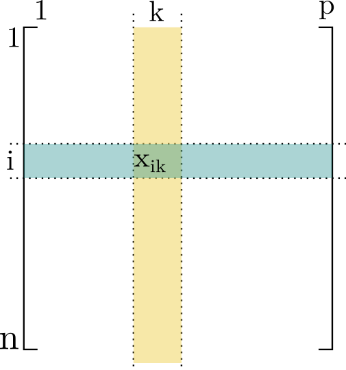
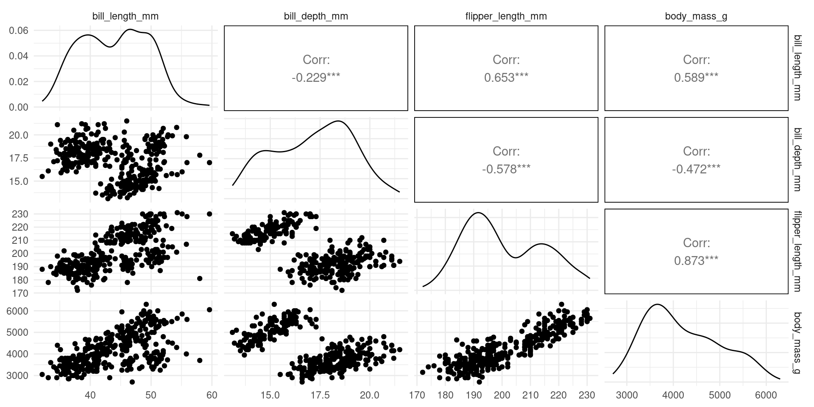
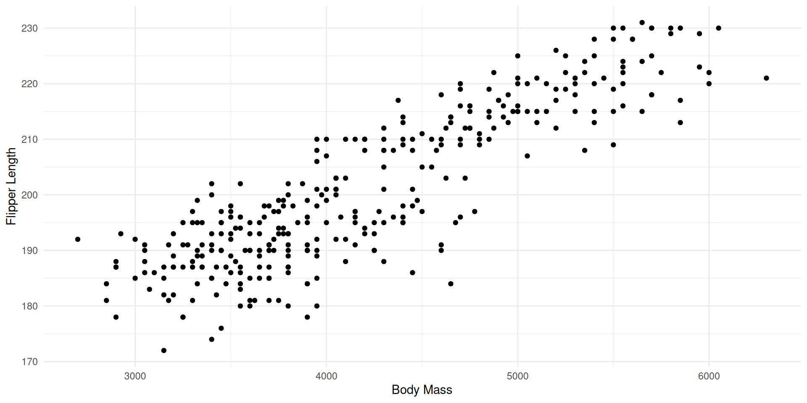
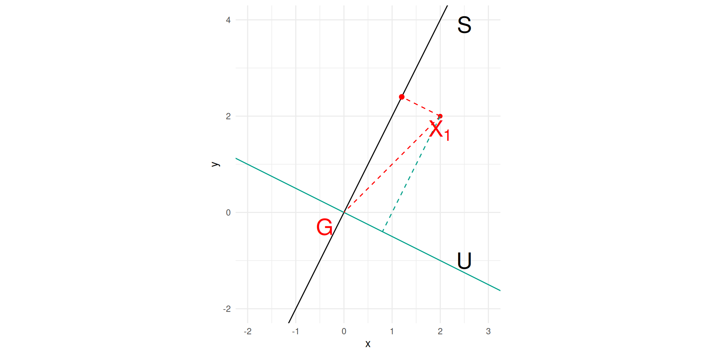

How can we best visualize these data to reveal the relationships between variables and identify similarities between individuals?
bill_length_mm: bill length,
bill_depth_mm: bill depth,
flipper_length_mm: flipper length,
body_mass_g: body mass.
Introduction
Formalization
For each individual \(i\), we measured \(p\) different variables.
For each variable \(k\), we measured \(n\) individuals.
The data are arranged in a table with \(n\) rows and \(p\) columns.

We denote \(x_{ik}\) as the value measured for variable \(k\) on individual \(i\),
and
\(x_{\bullet k} = \frac{1}{n} \sum_{i=1}^n x_{ik}\) as the mean value of variable \(k\),
\(s_k = \sqrt{\frac{1}{n} \sum_{i=1}^n (x_{ik}-x_{\bullet k})^2}\) as the standard deviation of variable \(k\).
The Same Question in Various Fields
Sensory analysis: score of descriptor \(k\) for product \(i\)
Economics: value of indicator \(k\) for year \(i\)
Genomics: gene expression \(k\) for patient/sample \(i\)
Marketing: satisfaction index \(k\) for brand \(i\)
etc…
We have \(p\) variables measured on \(n\) individuals, and we want to visualize these data to understand the relationships between variables and the proximity between individuals.
Seeing is Understanding: How to Represent the Information Contained in This Table?
Idea 1: Represent the relationships between variables 2 by 2

Seeing is Understanding: How to Represent the Information Contained in This Table?
Idea 1: Represent the relationships between variables 2 by 2

We lose information on the other axes.
Seeing is Understanding: How to Represent the Information Contained in This Table?
Idea 1: Represent the relationships between variables 2 by 2
Seeing is Understanding: How to Represent the Information Contained in This Table?
Objective:
Represent without losing too much information
Ideally, individuals far apart in the initial cloud remain far apart in the representation.
What We Need:
Quantify the information loss in the representation
Build the representation that loses the least amount of information
Precautions:
Potentially, Make variables expressed in different units comparable
Distance and Inertia
Distance between individuals
Let \(X_{i,.}^\intercal \in \R^d\) be the descriptions of individual \(i\). To quantify the distance between indivuals we might used the Euclidian distance in \(\R^d,\)
with \(s_k^2=\sum_{i=1}^n (x_{ik} - x_{.k})^2,\)\(x_{.k} =\frac{1}{n}\sum_{i=1}^n x_{ik}\)
Remarks
The distance defined with \(D_{1/s^2}\) is the same than the distance defined on centred and scaled variables with the identity matrix.
In the following, we will assume that \(X\) is the matrix of centred and scaled variables.
Dispersion measure: Inertia with respect to a point
Definition
Inertia (denomination derived from moments of inertia in Physics) with respect to a point \(a \in R^{d},\) according to metric \(M\): \[I_a = \sum_{i=1}^n \norm{X_{i,.}^\intercal - a}_M^2\]
Inertia around the centroïd \(G\) (center of gravity of the cloud) plays a central role in Principal Component Analysis:
As the variables are scaled, \(\sum_{i=1}^n (x_{ik} - x_{.,k})^2 = n s^2_k = n.\) and \(I_G=nd.\)
Total inertia with scaled centred variables is \(nd\)
Dispersion measure: Inertia with respect to a affine subspace
Definition
Inertia with respect to an affine subspace \(S\) according to metric \(M\): \(I_S = \sum_{i=1}^n d_M(X_{i,.}, S)^2\)
Huygens theorem states that if \(S^G\) stands for the affine subspace containing \(G\) and parallel to \(S\) then \[I_S = I_{S^G} + d_M^2(a, G),\] where \(a\) is the orthogonal projection of \(G\) on \(S\).
The affine subspace \(S\) which minimizes inertia is \(S^G\).
Inertia Decomposition
Since, variables are centred \(G=\mathbb{0}\), \(I=\sum_{i=1}^n d(X_{i,.},0)^2.\)
Let \(S\) be an affine subspace and \(U=S^\intercal,\)\(X^S_{i,.}\) (recip. \(X^S_{i,.})\)) the orthogonal projection on \(S\) (recip. on \(U\)).
As \(d(X_{i,.},0)^2 = d(X^S_{i,.},0)^2 + d(X^U_{i,.},0)^2\), \(I=I_S + I_{S^\intercal}\)

Interpretation
\(I_S\) is the dispersion of the dataset lost by projection on \(S\),
while \(I_{S^\intercal}\) is the dispersion of the dataset projected on \(S\).
PCA
Identifying \((U_1, U_d)\) a sequence of orthogonal unitary vectors such that \(I_{U_1}\leq I_{U_2}\leq \cdots \leq I_{U_d}\).
The projection on \(U_1\) is the best projection of the dataset in one dimension, \(U_1\) define the first Principal Component.
Inertia: useful representation
Let \(x_i= X_{i,.}^\intercal\), (recall that \(X_{i,}\) is a row vector and \(x_i\) is the corresponding column vector).
\(X^\intercal X\) is the covariance matrix of the \(d\) variables,
\(X^\intercal X\) is a symmetric \(\R^{d\times d}\) matrix, and the corresponding SVD
\[X^\intercal X = \left ( P D Q^\intercal \right )^\intercal \left ( P D Q^\intercal \right ) = Q D P^\intercal P D Q^\intercal = Q D^2 Q^\intercal.\]
\(I= tr(X^\intercal X) = tr(Q D^2 Q^\intercal) = tr(Q^\intercal Q D ) = tr( D ) = \sum_{k=1}^d \sigma^2_k,\)
where \(\sigma^2_k\) stands for the k\(^{th}\) eigen value.
Principal Components Construction
Identifying \(U_1\)
Consider \(I_{\Delta_{U}}\) the inertia with respect to \(\Delta_{U}\) affine subspace containing \(G\) with directed bu the unitary vector \(U\).
\(I_{\Delta_{U}}\) is the cost of the projection on \(\Delta_{U}\), i.e the loss information.
Minimizing \(I_{\Delta_{U}}\) equals maximizing \(I_{\Delta_{U^T}}\), i.e the dispersion of the projected set of data points.
So that \[\begin{align}
I_{\Delta_{U^\intercal}} & = \sum_{i=1}^n d(X_{i,}, U^\intercal)^2 \cr
& = \norm{X U}^2 \cr
& = U^\intercal X^\intercal X U\cr
& = U^\intercal Q D^2 Q^\intercal U\cr
\end{align}\]
But \(U^\intercal Q = \begin{pmatrix} U^\intercal Q_{.,1}, \cdots, U^\intercal Q_{.,d})\end{pmatrix}\) Is the coordinate of the unitary vector \(U\) on the basis defined by the eigen vector of \(X\): \(\omega_1 q_1 + \cdots + \omega_d q_d,\) such that \(\sum_k \omega_k^2=1\)
Maximizing \(I_{\Delta_{U^\intercal}}\), as \(\sigma^2_k\) are in decreasing order, consists in choosing \(\omega_1=1\)
Principal Components
Consider the sequence of eigen vectors in \(Q\), they
form an orthonormal basis,
are ordered according their corresponding eigen values.
From a mathematical point of view, PCA consist in using this new basis.
Consequences
Define \(d\) new variables \(C_1, \cdots, C_d,\) which are Linear combination of initial variables, i.e \(C_j = \sum_{k= 1}^d q_{jk} V_k\)
Quantify the quantity of information captured by each variable,
Being able to quantify the quality of representation for one individual or one variable
Practical considerations
Normalizing inertia
Total Inertia of the scaled dataset depends on the number of individual.
It is common to define a scaled Inertia to get rid of\(n\).
\[I^{s} = \frac{1}{n} I,\]
We also define the Covariance matrix \(\Sigma\)
\[\Sigma = \frac{1}{n} X^\intercal X,\] and we considered the SVD for \(\frac{1}{\sqrt{n}} X.\)
This is generally the implemented version.
SVD of \(X^\intercal X\) instead of \(X\)
As we are mainly interesting in \(Q\), \(d\times d\) matrix (not \(P\) the \(n\times n\) matrix) and the square of the eigen values, it is more efficient to consider the SVD of \(\Sigma\) directly.
Geometrically
The matrix \(Q^\intercal\) transform the original canonical basis \((e_1, \cdots, e_d)\) of \(\R^d\) in the new ACP basis \((v_1, \cdots, v_d)\); .
## the core scale function normalizes by n-1 instead of nscale2 <-function(x, na.rm =FALSE) (x -mean(x, na.rm = na.rm)) / ( sqrt((length(x)-1) /length(x)) *sd(x, na.rm) )X <- penguins |>mutate(year =as.factor(year))|>## year willnot be considered as numerical variableselect(where(is.numeric)) |>## select all numeric columnsmutate_all(list(scale2)) ## and scale themn <-nrow(X) # number of individualsd <-ncol(X)X_mat <- X |>as.matrix() ## the data point matrix X_norm_mat <-1/sqrt(n) * X_mat ## the version considered to get rid of the number of individualsX_mat_trace <-sum( diag(t(X_mat)%*% X_mat) ) # n d X_norm_mat_trace <-sum( diag( t( X_norm_mat)%*% X_norm_mat ) ) # dpenguins_svd <-svd( t(X_mat)%*% X_mat )penguins_norm_svd <-svd( t(X_norm_mat)%*% X_norm_mat )## eigenvaluespenguins_eigenvalue <- penguins_svd$dsum(penguins_eigenvalue)
Let \(C_{12}\) designs the plan defined by \(C_1\) and \(C_2\) and let \(X^{C}\) be the coordinates of the individuals in the new basis.
The information preserved by projection is \[\begin{align}
I_{C_{12}^\perp} & = \sum_{i=1}^n \left ( \left(x^{C}_{i1)}\right)^2 + \left(x^{C}_{i2}\right)^2 \right) \cr
& = tr\left( \left(X^{C}_{,1:2}\right)^\intercal X^{C}_{,1:2}\right)\cr
& = \lambda_1^2 + \lambda^2_2\cr
& = n (\sigma_1^2 + \sigma^2_2)\cr
\end{align}\]
cat("On plan 12: ", sum(penguins_eigenvalue[1:2]), ".\n")cat("Working with the correlation matrix (/n), sum of eigenvalues is ", sum(penguins_norm_eigenvalue[1:2]), ". \n This has to be multiply by the size of the dataset to get inertia:", sum(penguins_norm_eigenvalue[1:2]) * n, "\n")cat("This is easier to appreciate when expressed as a propotion of total inertia:", round(sum(penguins_norm_eigenvalue[1:2])/sum(penguins_norm_eigenvalue)*100,2),"%. \n")
On plan 12: 1173.316 .
Working with the correlation matrix (/n), sum of eigenvalues is 3.523473 .
This has to be multiply by the size of the dataset to get inertia: 1173.316
This is easier to appreciate when expressed as a propotion of total inertia: 88.09 %.
Representing jointly initial variables and principal components
To understand the links between original and new variables, or between original variables themselve.
The quality of the projection on a the plan \((C^1C^2)\) depends on the angle \(\theta_{i,1-2}\) between the original variable and the projection plan.
## quality of the representation for variable 1 on teh different axisnew_var_coord[,1]^2## quality of the projection on plan C1-C2sum((new_var_coord[,1]^2 )[1:2])